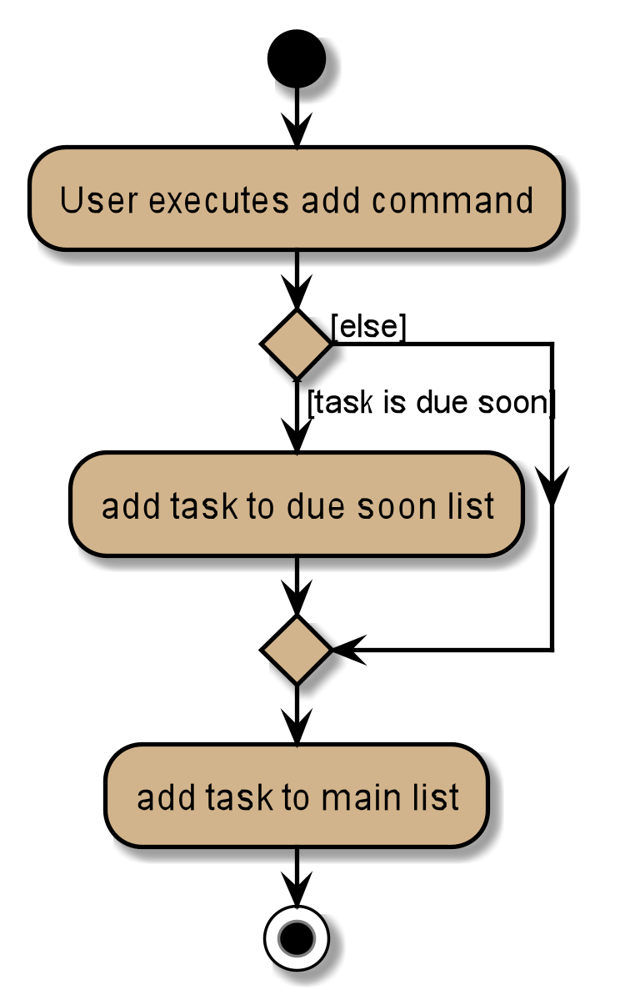
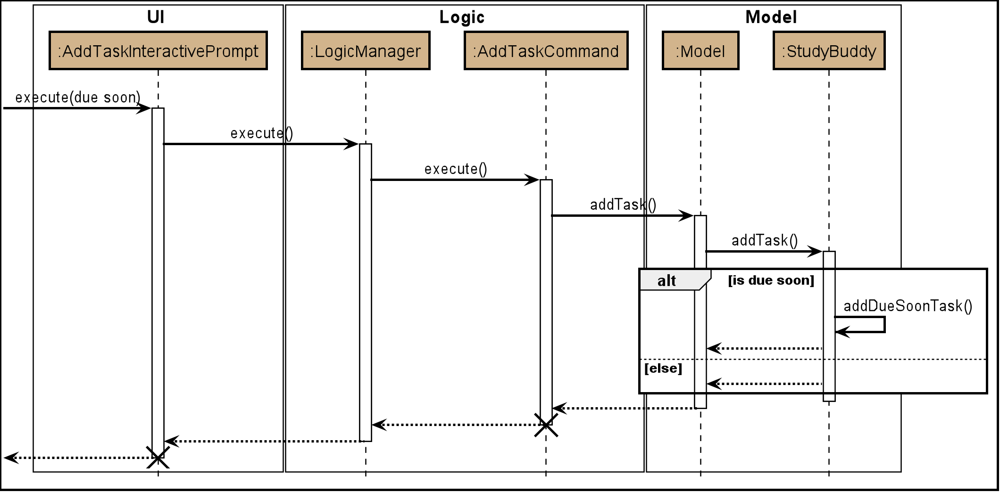
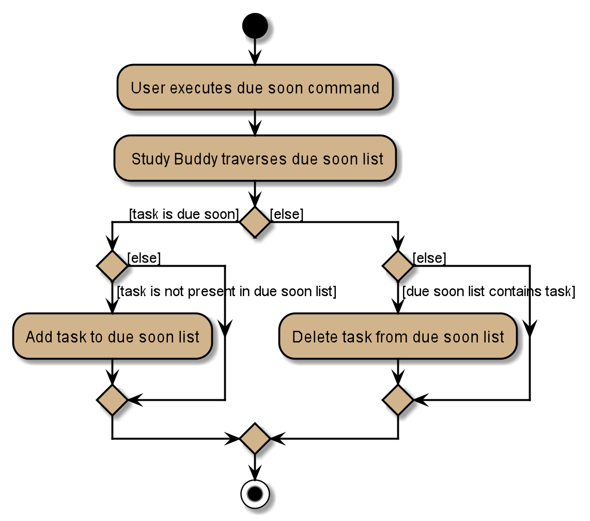
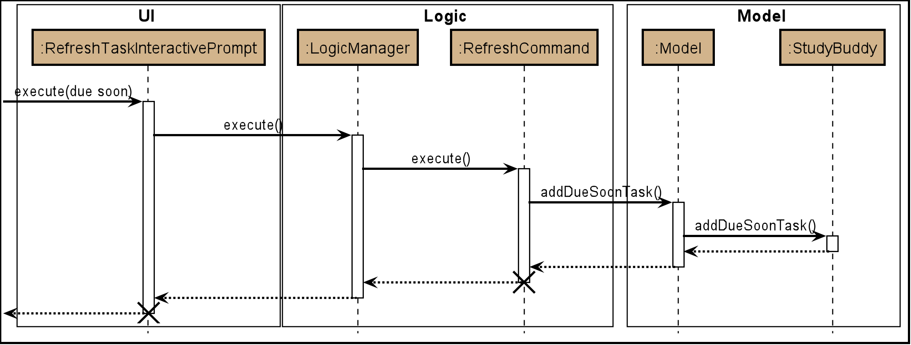
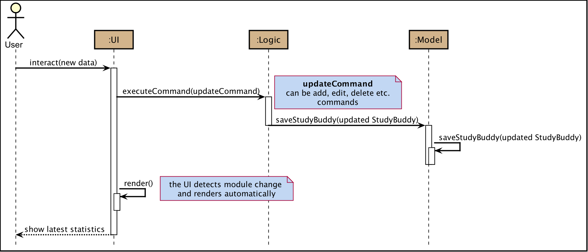

By: Team Drag&Drop Since: Jan 2020
- 1. Introduction
- 2. Setting up
- 3. Commonly Used Symbols
- 4. Design
- 5. Implementation
- 6. Documentation
- 7. Testing
- 8. Dev Ops
- Appendix A: Product Scope
- Appendix B: User Stories
- Appendix C: Use Cases
- Appendix D: Non Functional Requirements
- Appendix E: Glossary
- Appendix F: Instructions for Manual Testing
- Appendix G: Effort
1. Introduction
Study Buddy is a task-management tool made for students who want to be able to track and manage their tasks in one place.
Study Buddy uses various visualization tools such as pie charts and calendars, provides useful functionality such as archive, Due Soon task list etc to make task management simple and convenient.
In particular, Study Buddy is a Command Line Interface (CLI) application that also provides some Graphical User Interface (GUI). This means that users are expected to interact with the Study Buddy mainly through the command line, but each command executed will evoke a visual response as well.
The purpose of this guide is to help potential developers get up to speed on the Study Buddy code base and functionality. We hope that this document will ease the process of further enhancing and developing Study Buddy.
2. Setting up
Refer to the guide here.
3. Commonly Used Symbols
|
Note
|
This symbol indicates something you should take note of. |
|
Tip
|
This symbol indicates a tip that you could use. |
|
Caution
|
This symbol indicates an aspect that should be used with caution. |
|
Important
|
This symbol indicates something to which we want to draw your attention. |
4. Design
4.1. Architecture
The Architecture Diagram given above explains the high-level design of the App. Given below is a quick overview of each component.
|
Tip
|
The .puml files used to create diagrams in this document can be found in the diagrams folder.
Refer to the Using PlantUML guide to learn how to create and edit diagrams.
|
-
At app launch: Initializes the components in the correct sequence, and connects them up with each other.
-
At shut down: Shuts down the components and invokes cleanup method where necessary.
Commons represents a collection of classes used by multiple other components.
The following class plays an important role at the architecture level:
-
LogsCenter: Used by many classes to write log messages to the App’s log file.
The rest of the App consists of four components.
Each of the four components
-
Defines its API in an
interfacewith the same name as the Component. -
Exposes its functionality using a
{Component Name}Managerclass.
For example, the Logic component (see the class diagram given below) defines it’s API in the Logic.java interface and exposes its functionality using the LogicManager.java class.
How the architecture components interact with each other
The Sequence Diagram below shows how the components interact with each other for the scenario where the user issues the command delete 1.
delete 1 commandThe sections below give more details of each component.
4.2. UI component
API : Ui.java
The UI consists of a MainWindow which is made up by different components such as StatusBarFooter, FeedbackDisplayBox,
CommandBox as well as variants Panels and Cards. All these components, including the MainWindow, inherit from the abstract UiPart class.
The UI component uses JavaFx UI framework.
The layout of these UI parts are defined in matching .fxml files that are in the src/main/resources/view folder.
For example, the layout of the MainWindow is specified in MainWindow.fxml
- The
UIcomponent -
-
Interacts with user in an interactive process with the help of
Logiccomponent.-
CommandBoxcollects the user keyboard input. -
Logicparses user input in each interaction and executes the command subsequently if the interaction ends without any exception. -
FeedbackDisplayBoxresponses system information to user, such as error message and command execution result.-
When invalid input received, proper message will respond via
FeedbackDisplayBox. The interaction of the command will not be terminated, user can continue with the process with valid input.
-
-
-
Listens for changes to Model data so that the UI can be updated simultaneously.
-
All Cards components and
CalenderPanel,ModuleListPanel,ProductivityPanelandTaskSummaryPanelwill listen to the changes to Model data.
-
-
|
Note
|
The command execution will only terminate in two scenarios: 1. When the command is successfully executed. 2. When the user enter quit and kbd:[enter] to exit the execution.
|
4.3. Logic component
API :
Logic.java
-
The
InteractiveCommandPromptinUiuses the parsers to parse the user command. -
This results in a
Commandobject which is executed by theLogicManager. -
The command execution can affect the
Model(e.g. adding or editing a task). -
The result of the command execution is encapsulated as a
CommandResultobject which is passed back to theUi. -
In addition, the
CommandResultobject can also instruct theUito perform certain actions, such as displaying a help message to the user.
4.4. Model component
API : Model.java
The Model,
-
stores a
UserPrefobject that represents the user’s preferences. -
stores the Study Buddy data.
-
exposes an unmodifiable
ObservableList<Task>that can be 'observed' e.g. the UI can be bound to this list so that the UI automatically updates when the data in the list change. -
does not depend on any of the other three components.
4.5. Storage component
API : Storage.java
The Storage component,
-
can save
UserPrefobjects in json format and read it back. -
can save the Study Buddy data in json format and read it back.
-
saves all tasks, due soon tasks, archived task, modules and stats.
4.6. Common classes
Classes used by multiple components are in the draganddrop.studybuddy.commons package.
5. Implementation
This section describes some noteworthy details on how certain features are implemented.
5.1. Due Soon Tasks Feature
5.1.1. Implementation
The Due Soon Tasks feature allows users to view the tasks that have deadlines within the next week.
This feature is implemented using a panel on the main window with a list of tasks Due Soon that is updated with every command that may affect Due Soon task list (such as add, delete or archive).
Some situations that trigger due soon feature are:
-
When user enters a task:
-
What it does:
-
When a task that is added to the main list, is due within the next week, it is automatically added to the list of due soon tasks.
-
The list is automatically sorted to be in increasing order of deadlines.
-
The time left for the deadline is also added.
Figure 8. Activity Diagram for Add to Due Soon list
-
-
Details:
-
The add command when entered by the user, triggers the creation of an object of the InteractivePrompt class (in this case AddTaskInteractivePrompt).
-
In the AddTaskInteractivePrompt class, the data entered by user is parsed.
-
If there are no errors, the AddTaskCommand object is created which triggers the addTask() function in Model.
-
This function in turns calls addTask() function in Study Buddy.
-
This function calls the isDueSoon() function in Task to confirm if the task belong to the due soon list.
-
If it does, it is added to due soon list and main list, and the due soon list is sorted. Else, it is simply added to the main list.
Figure 9. Sequence Diagram for Add to Due Soon listCautionThe lifeline for every member should end at the destroy marker (X) but due to a limitation of PlantUML, the lifeline reaches the end of diagram.
-
-
-
When user deletes a task:
-
What it does:
-
When a task that is deleted from the main list occurs in the due soon list as well, it is automatically deleted.
 Figure 10. Activity Diagram for Delete from Due Soon list
Figure 10. Activity Diagram for Delete from Due Soon list
-
-
Details:
-
The delete command when entered by the user, triggers the creation of an object of the InteractivePrompt class (in this case DeleteTaskInteractivePrompt).
-
In the DeleteTaskInteractivePrompt class, the data entered by user is parsed.
-
If there are no errors, the DeleteTaskCommand object is created which triggers the deleteTask() function in Model.
-
This function in turns calls removeTask() function in Study Buddy.
-
removeTask() calls the updateDeleteDueSoon() function in StudyBuddy which checks if the task exists in the due soon list.
-
If it does, it is deleted from the due soon list and main list. Else, it is simply deleted from the main list.
 Figure 11. Sequence Diagram for Delete from Due Soon listCaution
Figure 11. Sequence Diagram for Delete from Due Soon listCautionThe lifeline for every member should end at the destroy marker (X) but due to a limitation of PlantUML, the lifeline reaches the end of diagram.
-
-
-
When user refreshes due soon list:
-
What it does:
-
Refreshes the list of due soon tasks and status tags. This command is useful for a situation where due soon list is not up to date due to a drastic change in time.
Figure 12. Activity diagram for refresh
-
-
Details:
-
The refresh command when entered by the user, triggers the creation of an object of the InteractivePrompt class (in this case RefreshTaskInteractivePrompt).
-
In the RefreshTaskInteractivePrompt class, the data entered by user is parsed.
-
If there are no errors, the RefreshCommand object is created which clears the due soon list and then, iterates through the main list and calls addDueSoonTask() in Model, for any tasks that are due soon.
Figure 13. Sequence diagram for refreshCautionThe lifeline for every member should end at the destroy marker (X) but due to a limitation of PlantUML, the lifeline reaches the end of diagram.
-
-
-
When the application launches:
-
What it does:
-
It loads the due soon tasks into a panel by filtering tasks that are due soon from the main list.
-
This is necessary, because old list of due soon tasks may not be up-to-date.
-
-
Details:
-
The addTask() function in StudyBuddy class already checks if task is due soon and adds to due soon list (as mentioned above).
-
While all tasks are being added to their respective lists in JsonSerializableStudyBuddy class, the due soon list gets automatically updated.
-
-
|
Note
|
Other commands like edit, archive etc also trigger due soon feature in a similar manner. |
|
Note
|
Calculation of time left for deadline and check for if task is due soon can be found in the Task class. |
5.1.2. Example Usage Scenario
Given below is an example usage scenario and how the Due Soon list mechanism behaves at each step.
Step 1. The user launches the application for the first time.
The list of tasks Due Soon will be initialized and displayed with the initial study buddy state. Initialization is done by filtering tasks that are Due Soon from the general list of tasks.
Step 2. The user executes add command to add a task.
The add command execution checks if this task belongs in the Due Soon tasks list (i.e it is due in 7 days). If it does, the task is added to both lists, else it is only added to the main list.
Step 3. The user executes delete command to delete a task.
The delete command execution also checks if this task exists in the Due Soon task list. If it does, task is deleted from both lists, else it is only deleted from the main list.
Step 4. The user executes refresh command to refresh the due soon task list.
The refresh command execution will traverse the main list and check if there are any inconsistencies. For example, if there has been a change in time and a task is missing from the due soon task list, it will be added.
It will also update the time left.
|
Note
|
If there are no such inconsistencies, the refresh command will not make any changes to the Due Soon task list. |
5.1.3. Design Considerations
Aspect: How refresh command works
-
Alternative 1 (current choice): Clear and reload the due soon task list.
-
Pros: Less prone to errors since the entire list is "refreshed".
-
Cons: More operation intensive.
-
-
Alternative 2: Does not clear and reload the due soon task list.
-
Pros: Fewer operations need to be performed.
-
Cons: May have be more prone to errors because list is not completely "refreshed". Some parts of it are the same.
-
5.2. Task Summary Feature
5.2.1. Implementation
-
Feature introduction
The task summary feature automatically summarize the collected data into different charts. It also allows user to click on chart to find the relevant tasks. The UI of the feature is in
Statisticspage. -
Implementation detail
This feature is implemented using
JavaFxcharts such asPieChart,AreaChartandStackedBarChart, as well as aTask List Panel.The
Task List Panelis used to show the relevant task records when user click on thesecharts. -
Charts & DataBind & OnClick Action Table
TipTo improve the readability, only the tasks due or start within the next 60 days will be counted into Area Chart.Chart Type Data Used OnClick Action PieChart
Compare the number of tasks in different statuses.
TaskStatus,TaskCountDisplay all tasks with the selected status.
AreaChar
Summarize the task deadlines or start dates for different modules.
ModuleCode,Deadline/Start date,
TaskCountClick on area:
Display tasks under the selected module.
Click on data point:
Display tasks under the selected module and will due or start the chosen date.StackedBar Chart
Compare the weight of different types of tasks in each module.
ModuleCode,TaskType,WeightSumDisplay tasks under the selected module and type.
-
OnChangeListener
The feature listens to the change of
UnArchived Task List,Archived Task ListandModule List.Therefore, the charts can automatically update according to the command execution.
Currently, commands as
addeditdeletesortfindarchivedonelistandclearcan trigger the refresh of the charts.Figure 14. Sequence diagram for task summary UI update when data changeNoteIt is possible that the pie chart’s labels can overlap together. This is an unfixed bug regarding the JDK which is caused by JavaFX chart off-sync. To get more information, you may refer to here. When this issue happens, you can use any command that can trigger chart updating to refresh the chart.
5.2.2. Example Usage Scenario
Given below is an example usage scenario and how the task summary mechanism behaves at each step.
Step 1. The user launches the application for the first time, the statistics will perform on top of the sample records,
and the result will be visualized into different charts organized in the Tab Panel. After the user clicks Statistics
from the top menu bar, the Tab Panel and the Task List Panel will display.
Step 2. The user navigates to the Statistics Page for the first time. The Tab Panel should
display the Pie Chart and the Task List Panel is empty with a title: "Click on Chart to View Related Tasks".
Indeed, this is how the Statistics Page looks like every time the user navigates back from another Page.
Step 3. The user clicks on Pie Chart 's Pending portion. All tasks in Pending status should display in Task List Panel.
Meanwhile, the title of the Panel will change to "PENDING: # Tasks" (# stands for the number of Pending tasks).
Step 4. The user clicks on Area Chart 's CS2101 area. All tasks under CS2101 should display in Task List Panel.
Meanwhile, the title of the Panel will change to "Tasks under CS2101".
Step 5. The user executes add command at Statistics Page,
the charts should update automatically.
5.2.3. Design Considerations
Aspect: Will this feature contribute value to CLI user
- Consideration
-
Task Summary feature involves mouse clicking event.
- Explanation
-
The most significant value of Task Summary Feature is the statistics it provides, instead of retrieving the relevant tasks.
The statistics is auto-generated along the way the user managing their task records using keyboard input. Which means Study Buddy only supports keyboard input for statistics generating. Therefore, this feature still let the CLI users gain more benefits.
Aspect: How to update charts
-
Alternative 1 (current choice): Use
onChangeListenerto monitor the data update and re-render the UI accordingly.-
Pros: More user-friendly and better enhance user’s productivity.
-
Cons: Might encounter JavaFX chart off-sync bug, and results in label overlapping. But user can always use another command to walk around this problem.
-
-
Alternative 2: Ask the user to re-launch the application or just re-open the Page to trigger the UI rendering.
-
Pros: Safe from the JavaFX chart off-sync bug.
-
Cons: Force user to close or navigate around the application every time he/she wants to check the updated charts. Compare to the Cons from Alternative 1, this is less useful.
-
5.3. Calendar feature
5.3.1. Implementation
The calendar feature displays a calendar for users.
The feature is implemented by overriding the task list display panel on the main window with calendar box. The calendar currently supports following features:
-
Displays the name of all tasks on that day in the calendar grid.
-
Access calendars in previous or next month using the buttons on top.
-
Displays more information about tasks for the day on the Due Soon panel after clicking on a grid.
-
Fast forward to a specific year/month using CLI.
When a calender is requested, a CalendarPanel object is constructed, the object diagram below shows the structure of a CalendarPanel. We will be using the date 01/04/2020 as an example.
5.3.2. Example usage scenarios
Using mouse click
Clicking on the show calendar menu item under the calendar menu will enable this feature. Upon requesting for the calendar to be shown:
-
The calendar box object will be constructed
-
The calendar loops through every day of the month while searching for tasks due on that day
-
The task name is added to the calendar grid
Using CLI
As of Study Buddy v1.4, a new feature has been added that allows users to navigate the calendar using CLI.
-
The user enters 'calendar' into the command box.
-
The user enters the selected date into the command box.
-
Calendar will be generated the same way as a mouse click, however, it will use the selected date as parameters.
Below is an activity diagram describing the events that will happen:
5.3.3. Design considerations
-
It is more efficient to cache the calendar rather than to generate a new one, however, we do not expect the user to have too many tasks and therefore it should not slow down the application.
5.4. Archive feature
Archive stores selected task away into a separate task list, this command is used when the user has completed a task but still wants to keep track of it.
5.4.1. Implementation
Archive uses both the old delete and a new archive command. Upon executing the archive command, it will call the model to delete the task and archive it elsewhere.
The archived task list is stored within Model as a seperate list.
|
Note
|
The index for archived tasks are not used for any commands other than unarchive.
|
Sequence diagram:
|
Note
|
The lifeline of an object should not continue after deletion. Lifeline is shown due to a limitation of plantUML. |
5.5. Productivity feature
5.5.1. Implementation
The productivity feature displays insights related to the user’s productivity over the past day, week and more on the Productivity page. The Productivity page is integrated with the main page as a side panel.
The Productivity page is further composed of 3 tabs:
-
Daily Productivity Tab
-
Weekly Productivity Tab
-
Productivity Points Tab
The Productivity page can be viewed by clicking on the Productivity menu item, which directs the user to the Daily Productivity Tab. The Productivity page can also be viewed by clicking on the Productivity Points shown on the top right of the application window. This directs the user to the Productivity Points Tab.
The productivity feature is facilitated by the Statistics class, which allows
StudyBuddy to keep track of relevant usage statistics of the user.
Statistics is further composed of classes that keep track of specific statistics:
-
CompletionStatskeeps track of the number of tasks completed by the user each day and each week -
OverdueStatskeeps track of the number of tasks that went overdue each day and each week. -
ScoreStatskeeps track of the user’s Productivity Points and rank each day -
GeneralStatskeeps track of the user’s goal, streak, and other statistics not covered by the other statistics classes
The user can gain or lose Productivity Points in StudyBuddy when certain actions or events are completed. These include:
-
Adding a task: +1
-
Completing a task: +10
-
Completing your daily goal: +(points equivalent to daily goal)
-
Using advanced features; +1
-
Letting a task go Overdue: -1
Each usage statistic is updated accordingly when the respective user action or event
has concluded. These statistics are then rendered on the ProductivityPage.
The chart visualizations are implemented using ProgressIndicator, BarChart and AreaChart.
When the statistics are updated, the task list’s event listener and classes implementing
GoalObserver will be informed of the changes. ProductivityPage re-renders the
displayed information when either of these are updated.
The data displayed will be automatically updated upon calling any of the following commands:
-
add -
done -
delete -
refresh -
goal
5.5.2. Example Use Scenario
Given below is an example usage scenario and how the Productivity feature behaves at each step.
Step 1: The user launches the application.
Step 2: The Productivity feature displays the user’s Productivity Points on the top right of the screen.
Step 3: The user clicks the Productivity Menu button
Step 4: The Daily Productivity Tab is displayed to the user
Step 5: The user completes a task using done
Step 6: The daily number of tasks is added and Productivity Points is increased.
If the daily goal has been reached, the user’s streak is incremented.
Here is an activity diagram of the aforementioned steps:
Extension: Suppose the user sees the Productivity Points and clicks it Step 3: The user clicks the Productivity Points on the top right of the screen Step 4: The Productivity Points Tab is displayed to the user
From here, the user can continue to manage tasks as per Step 5 and 6 above, or navigate to other Productivity tabs.
Clicking the Productivity menu item
image
5.5.3. Design Considerations
Aspect: How to re-render Productivity page when statistics are updated
Alternative 1: re-render only the values that have been updated
-
Pros: maximizes loading speed and minimizes lag for the user
-
Cons: increases complexity for codebase, higher chance of bugs occuring
Alternative 2: always re-render the whole Productivity Page
-
Pros: easy to implement
-
Cons: may result in slower loading speed and more lag for the user
Alternative 3 (current choice): re-render only the values that have been updated if it does not result in increased code complexity
-
Pros: improves loading speed and decreases lag for the user, while keeping the codebase readable and easy to reason with.
-
Cons: may result in slower loading speed. However, based on testing, this trade-off does not result in any measurable delay.
5.6. Modules
The modules feature enables users to be able to group and view their tasks according to various modules or subjects.
Each module is assigned with a unique module code & a name.
By default, all task created with the add command will be be assigned to module code OO0000O.
5.6.1. Implementation
Modules are created with create mods Command and the program will request for a module name and module code. There are no restrictions on module name as long as it is not an empty entry.
Module codes however, require at least an alphabetical prefix, a number, and a postfix(optional).
Correct moduleCodes:
A0A
CS11X
AA1234
Incorrect moduleCodes:
123456
CAT
555T5.6.2. Sequence diagram for creating modules
This is a sequence of how a module is created using the create mods feature. Take note that all interactions go through the CommandBox first in the UI, but it will be omitted from this diagram for simplicity.

5.7. Logging
We are using java.util.logging package for logging.
The LogsCenter class is used to manage the logging levels and logging destinations.
-
The logging level can be controlled using the
logLevelsetting in the configuration file (See Section 5.8, “Configuration”) -
The
Loggerfor a class can be obtained usingLogsCenter.getLogger(Class)which will log messages according to the specified logging level -
Currently log messages are output through:
Consoleand to a.logfile.
Logging Levels
-
SEVERE: Critical problem detected which may possibly cause the termination of the application -
WARNING: Can continue, but with caution -
INFO: Information showing the noteworthy actions by the App -
FINE: Details that is not usually noteworthy but may be useful in debugging e.g. print the actual list instead of just its size
5.8. Configuration
Certain properties of the application can be controlled (e.g user prefs file location, logging level) through the configuration file (default: config.json).
5.9. [Proposed] Data encryption
Since Study Buddy is an offline application, there is no threat of being attacked via a network channel. However, in case the computer has a shared owner, a password feature can be implemented in the future for privacy purposes.
5.9.1. Implementation
The goal is to encrypt taskList3.json, while still allowing the owner to access his/her tasks using his password.
We will be using AES (Advanced Encryption Scheme) for encryption, and a slow hashing algorithm to derive a key from the user’s password. The slow hashing algorithm is to prevent brute force attacks.
Decryption
-
User enters a password.
-
If the password is correct, the same key should be hashed and taskList.json can be decrypted.
-
If the password is incorrect, user will be allowed to try again.
We leave it to the user’s own jurisdiction to create a strong password.
6. Documentation
Refer to the guide here.
7. Testing
Refer to the guide here.
8. Dev Ops
Refer to the guide here.
Appendix A: Product Scope
Target user profile:
-
has a need to manage a significant number of tasks for various modules
-
appreciates visualization tools to aid in task management
-
prefers desktop apps over mobile apps
-
can type fast
-
prefers typing over mouse input
Value proposition: manages tasks faster than a typical mouse/GUI driven app
Appendix B: User Stories
Priorities: High (must have) - * * *, Medium (nice to have) - * *, Low (unlikely to have) - *
| Priority | As a … | I want to … | So that I can… |
|---|---|---|---|
|
new user |
see usage instructions |
refer to instructions when I forget how to use the App |
|
user |
view a list of my tasks |
know what I have Pending |
|
user |
add a new task |
view all my Pending tasks in one place |
|
user |
delete a task |
remove entries that I no longer need |
|
user |
mark a task as completed |
update my list of Pending tasks |
|
user |
find a task by keyword |
locate details of a task without having to go through the entire list |
|
user with many deadlines |
sort tasks in order of deadlines |
organise my list by priority |
|
user |
archive tasks |
separate the tasks that are not applicable right now |
|
user |
view renamed tasks |
easily filter out any renamed data in my list |
|
user |
filter all pending tasks |
view all my Pending tasks in one place |
|
user who likes organization |
view all my tasks that are Due Soon |
know what to focus on in the next week |
|
user who makes typos |
be able to edit a task I have added |
correct any typos I have made |
|
user who is forgetful |
have an interactive command prompt |
not have to remember long commands |
|
user who is starting a new semester |
clear all my tasks |
start adding on to an empty list |
|
user who takes many modules |
add my modules |
view my modules |
|
user who finds it hard to keep track of all my deadlines |
have a calendar |
easily find tasks due on a day |
Appendix C: Use Cases
(For all use cases below, the System is Study Buddy and the Actor is the statistics, unless specified otherwise)
Use case: List task
MSS
-
User is on the
All tasksorproductivitytab. -
User requests to list tasks
-
Study Buddy shows a list of unarchived tasks
Use case ends.
Use case: Delete task
MSS
-
Refer to List task use case
-
User requests to delete a specific task in the list
-
Study Buddy asks for the index
-
User provides index
-
Study Buddy deletes the task
Use case ends.
Extensions
-
2a. The list is empty.
Use case ends.
-
3a. The given index is invalid.
-
3a1. Study Buddy shows an error message.
Use case resumes at step 2.
-
Use case: Filter tasks
MSS
-
User requests to filter tasks
-
Study Buddy shows two options for filter
-
User requests to filter by status
-
Study Buddy provides options to filter by status
-
User provides input
-
Study Buddy shows filtered task list
Use case ends.
Extensions
-
3a. The given index is invalid.
-
3a1. Study Buddy shows an error message.
Use case resumes at step 2.
-
-
3a. User chooses to filter by type instead.
-
4a. Study Buddy provides options to filter by type
Use case resumes at step 5.
-
Use case: View renamed
MSS
-
User requests to view renamed tasks
-
Study Buddy shows a list of renamed tasks
Use case ends.
Extensions
-
2a. The list is empty.
Use case ends.
-
3a. There are no duplicate tasks
Use case ends.
Use case: Refresh
MSS
-
User notices Due Soon list needs to be updates
-
User requests to refresh
-
Study Buddy refreshes the Due Soon list and status tags
Use case ends.
Extensions
-
2a. The list is empty.
Use case ends.
-
3a. There is nothing to refresh
Use case ends.
Appendix D: Non Functional Requirements
-
Should work on any mainstream OS as long as it has Java
11or above installed. -
Should be able to hold a good number of tasks without a noticeable sluggishness in performance for typical usage.
-
A user with above average typing speed for regular English text (i.e. not code, not system admin commands) should be able to accomplish most of the tasks faster using commands than using the mouse.
Appendix E: Glossary
- Mainstream OS
-
Windows, Linux, Unix, OS-X
- GUI
-
Graphical User Interface i.e a user interface that allows users to interact using graphical icons rather than text-based user interfaces
- Index
-
The index of a task refers to the sequence number of a task in the dashboard
Appendix F: Instructions for Manual Testing
Given below are instructions to test the app manually.
|
Note
|
These instructions only provide a starting point for testers to work on; testers are expected to do more exploratory testing. |
F.1. Launch and Shutdown
-
Initial launch
-
Download the jar file and copy into an empty folder
-
Double-click the jar file
Expected: Shows the GUI with a set of sample tasks. The window size may not be optimum.
-
-
Saving window preferences
-
Resize the window to an optimum size. Move the window to a different location. Close the window.
-
Re-launch the app by double-clicking the jar file.
Expected: The most recent window size and location is retained.
-
F.2. Deleting a task
-
Deleting a task while all tasks are listed
-
Prerequisites: List all tasks using the
listcommand. Multiple tasks in the list. -
Test case:
delete [Enter]+1
Expected: First task is deleted from the list. Successful deletion indication in the status message. -
Test case:
delete [Enter]+0
Expected: No task is deleted. Error details shown in the status message. -
Other incorrect delete commands to try:
delete x(where x is anything)
-
F.3. Saving data
-
Dealing with missing/corrupted data files
-
Prerequisites: Delete the "tasklist.json" file from data folder.
-
Test case: Launch the application
Expected: The application indicates that the data file needed is missing and creates one. c -
Prerequisites: Modify the "tasklist.json" file to show some incorrect data.
-
Test case: Launch the application
Expected: The application indicates that the data file is corrupted. Application launches successfully but has no data.
-
Appendix G: Effort
Interactive prompt
-
AB3 requires users to input a whole line of text at once, which is unintuitive and prone to typos by the user. Furthermore, AB3 uses tags like “\p” to break the user’s input up for parsing. This means that users will not be able to use these strings for any of their inputs.
-
Study buddy fixes that issue by introducing an interactive prompt for every command. This required a lot effort as there had to be an interactive prompt for every command.
Refactoring
-
AB3 uses the
Personclass which had 5 fields. Study buddy has 12 fields, every one of them is used in a major feature.